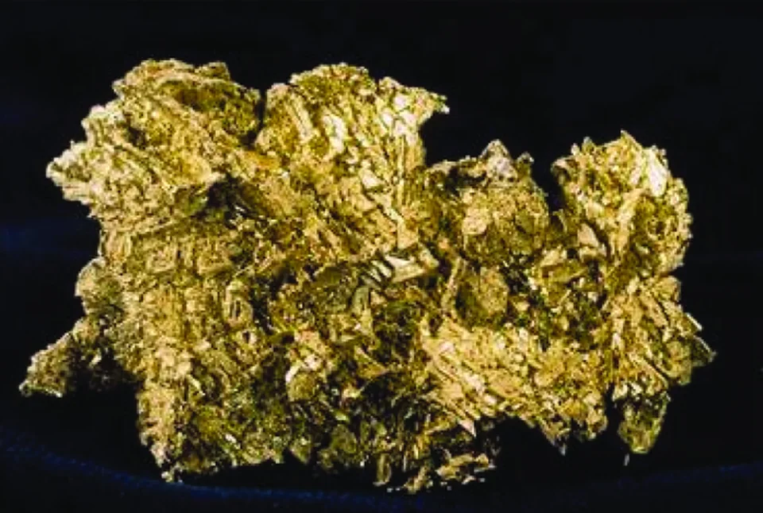
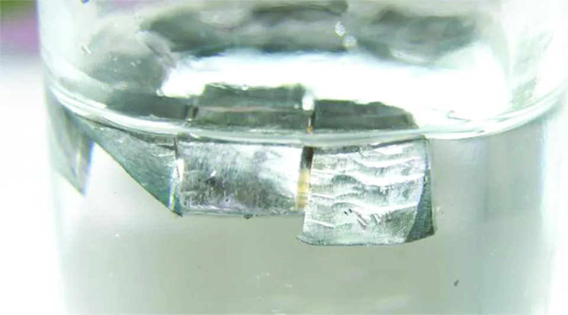

중학교 과학 · 2학년
중2-4물질의 구성
세상을 짓는 118가지 블록
먼저 배운 내용
학습 목표
- 원소와 화합물의 뜻을 알고, 물의 전기 분해 실험으로 물이 원소가 아님을 설명할 수 있다.
- 원소 기호와 화학식을 읽고 쓰며, 화학식에서 원자의 종류와 개수를 셀 수 있다.
- 원자가 원자핵(양성자·중성자)과 전자로 이루어져 있고, 양성자 수가 원소의 종류를 정한다는 것을 입자 모형으로 설명할 수 있다.
- 주기율표가 양성자 수 순서로 배열되어 있음을 알고, 같은 족에서 성질이 비슷한 원소(1족, 18족)를 찾을 수 있다.
- 물질이 원자, 분자, 이온 등으로 존재함을 알고, 원자가 전자를 잃거나 얻어 이온이 되는 과정을 전하로 설명할 수 있다.
이 단원의 학습 사다리
| 단계 | 무엇을 하나? |
|---|---|
| STEP 1. 이전 학습 다시 보기 | 입자 모형, 확산, 순물질과 혼합물을 다시 꺼내 본다 |
| STEP 2. 기초 다지기 | '분해할 수 있나?', 전하의 (+)와 (−), 모형으로 생각하기를 디딤돌로 놓는다 |
| STEP 3. 핵심 개념 | 원소 → 원소 기호·화학식 → 원자의 구조 → 양성자 수 → 주기율표 → 같은 족 → 분자 → 이온 |
| STEP 4. 오개념 바로잡기 | "원소와 원자는 같은 말?", "이온은 양성자가 늘어난 것?" 같은 착각을 바로잡는다 |
| STEP 5. 다음 단계로 | 중3 화학 반응식, 통합과학의 주기성과 화학 결합, 화학의 몰과 전기 음성도 |
| STEP 6. 생활·산업·진로 | 이차 전지, 수소 에너지, 네온·아르곤 기체, 환경 물질 관리 |
단원 들어가기
레고 블록 몇 가지 모양만으로 집도, 자동차도, 우주선도 만들 수 있다. 우리 주변의 물질도 비슷하다. 물, 공기, 스마트폰, 우리 몸까지 수없이 많은 물질이 있지만, 이것들을 쪼개고 또 쪼개 보면 결국 몇 가지 기본 성분으로 이루어져 있다. 지금까지 알려진 기본 성분, 곧 원소는 118가지이다.
그렇다면 질문이 생긴다. 물은 기본 성분일까, 아니면 더 쪼갤 수 있을까? 금과 은은 왜 서로 다른 물질일까? 그리고 소금물에 전기가 통하는 까닭은 무엇일까? 이 단원에서는 물질을 이루는 기본 성분(원소)에서 출발해, 그 원소를 이루는 아주 작은 입자(원자)의 속으로 들어갔다가, 원자들이 모여 이루는 분자와 이온까지 차례로 살펴본다.
STEP 1이전 학습 다시 보기
연계 개념표
| 이전 단원·성취기준 | 그때 배운 것 | 이 단원에서 확장되는 것 |
|---|---|---|
| 초등학교 5∼6학년군 「용해와 용액」 | 설탕이 물에 녹으면 보이지 않지만 없어진 것이 아니다. 용액의 무게는 용질과 용매 무게의 합이다 | 눈에 보이지 않는 작은 입자(분자, 이온)가 물 사이에 퍼져 있다는 생각으로 이어진다 |
| 중1 「물질의 상태 변화」 [9과04-01] | 확산과 증발로 물질을 이루는 입자가 운동하고 있음을 추론했다 | 그 '입자'의 정체를 원자, 분자, 이온으로 구체화한다 |
| 중1 「물질의 상태 변화」 [9과04-02] | 고체·액체·기체를 입자 모형으로 표현했다 | 입자 모형을 원자 내부(원자핵과 전자)와 분자 모형으로 넓힌다 |
| 중2 「물질의 특성」 [9과08-02] | 물질을 순물질과 혼합물로 분류했다 | 순물질을 다시 원소와 화합물로 나눈다 |
준비 운동 (사전 진단)
Q1. 향수 뚜껑을 열어 두면 교실 뒤쪽까지 냄새가 퍼진다. 이 현상으로 알 수 있는 물질을 이루는 입자의 성질은?
Q2. 다음 중 순물질을 모두 고르시오. ㄱ. 공기 ㄴ. 증류수 ㄷ. 소금물 ㄹ. 금 ㅁ. 우유
Q3. 털가죽으로 문지른 풍선을 머리카락에 가까이 하면 머리카락이 끌려 온다. 이처럼 물체가 띠는 전기를 무엇이라 할까?
정답 및 해설
Q1. 물질을 이루는 입자는 스스로 끊임없이 운동한다(확산).
Q2. ㄴ, ㄹ — 증류수는 물 한 가지, 금은 금 한 가지로 이루어진 순물질이다. 공기, 소금물, 우유는 여러 물질이 섞인 혼합물이다.
Q3. 정전기(마찰 전기). 이 단원 STEP 2에서 (+)와 (−) 전하를 다시 정리하고, 「전기와 자기」에서 자세히 배운다.
STEP 2기초 다지기
① 순물질을 다시 나누는 기준 — '더 분해할 수 있는가?'
「물질의 특성」에서 순물질은 한 가지 물질로만 이루어져 녹는점, 끓는점, 밀도가 일정하다고 배웠다. 이번에는 순물질을 하나 더 들여다보자. 같은 순물질이라도 가열하거나 전기를 흘려 더 간단한 물질로 나눌 수 있는 것과 어떤 방법으로도 더 나눌 수 없는 것이 있다.
| 물질 | 더 간단한 물질로 분해되는가? | 결과 |
|---|---|---|
| 물 | 전기를 흘리면 수소와 산소로 분해된다 | 화합물 |
| 산화 수은(붉은 가루) | 가열하면 수은과 산소로 분해된다 | 화합물 |
| 수소, 산소, 철, 금 | 어떤 화학적 방법으로도 더 분해되지 않는다 | 원소 |
② 전하 — (+)와 (−)
물체가 띠는 전기의 양을 전하(electric charge) 라고 한다. 전하에는 (+)전하와 (−)전하 두 종류가 있다.
- 같은 종류의 전하끼리는 밀어내고, 다른 종류의 전하끼리는 끌어당긴다.
- (+)와 (−)의 양이 같으면 서로 상쇄되어 전기적으로 중성이다. 3개의 (+)와 3개의 (−)가 있으면 전체 전하는 0이다.
이 생각이 원자와 이온을 이해하는 열쇠가 된다.
③ 모형으로 생각하기
원자는 너무 작아 눈으로 볼 수 없다. 과학자들은 실험 결과를 설명할 수 있는 모형(model) 을 만들어 원자를 이해해 왔다. 이 단원에서 그리는 원자 그림, 분자 모형은 실제 사진이 아니라 특징을 알기 쉽게 나타낸 약속된 그림이다. 모형은 새로운 실험 결과가 나오면 고쳐질 수 있다.
STEP 3핵심 개념
① 원소와 화합물 — 물은 원소일까? [9과11-01]
옛날 그리스의 철학자 아리스토텔레스는 세상의 모든 물질이 물, 불, 흙, 공기 네 가지 기본 성분으로 이루어져 있다고 생각했다. 이 생각은 2000년 가까이 이어졌다. 그런데 18세기 후반 프랑스의 과학자 라부아지에는 뜨겁게 달군 철 관에 물을 통과시켜 물을 분해하고 수소를 얻었다(물에서 나온 산소는 철과 결합하였다). 물이 수소와 산소로 이루어져 있음이 밝혀진 것이다. 물은 기본 성분이 아니었던 것이다.
오늘날 학교 실험실에서는 물의 전기 분해로 물이 원소가 아님을 확인할 수 있다.
| 전극 | 모이는 기체 | 확인 방법 | 모인 기체의 부피 |
|---|---|---|---|
| (−)극 | 수소 | 성냥불을 가까이 하면 '퍽' 소리를 내며 탄다 | 약 2 |
| (+)극 | 산소 | 꺼져 가는 불씨를 넣으면 불씨가 다시 살아난다 | 약 1 |
물(액체)에서 수소(불에 타는 기체)와 산소(타는 것을 돕는 기체)라는 전혀 다른 성질의 두 물질이 생겼다. 물은 수소와 산소, 두 원소로 이루어진 화합물이다.
| 분류 | 뜻 | 예 |
|---|---|---|
| 혼합물 | 두 가지 이상의 물질이 섞여 있음 | 공기, 바닷물, 우유, 흙탕물 |
| 순물질 – 원소 | 한 가지 원소로만 이루어짐 | 산소, 질소, 철, 구리, 금, 다이아몬드(탄소) |
| 순물질 – 화합물 | 두 가지 이상 원소가 결합함 | 물, 이산화 탄소, 소금(염화 나트륨), 설탕, 메테인 |
원소 가운데에는 자연에서 다른 원소와 결합하지 않은 채 발견되는 것도 있다. 아래 사진의 금이 그 예이다.

예제 1
다음 실험 결과를 보고 물질 A, B가 원소인지 화합물인지 판단하시오.
- A: 가열하였더니 검은색 고체(탄소)와 물이 생겼다.
- B: 가열하거나 전기를 흘리는 등 여러 방법을 써도 다른 물질로 분해되지 않았다.
풀이 A는 서로 다른 물질로 분해되었으므로 화합물, B는 더 이상 분해되지 않으므로 원소이다. (A의 예로 설탕을 들 수 있다.)
바로 확인방금 읽은 내용, 바로 점검하기
- (O/X) 물은 전기 분해하면 수소와 산소로 나뉘므로 원소이다.
- 빈칸: 물을 전기 분해할 때 (−)극 쪽에 모이는 기체는 ( )이다.
- 철, 산소, 이산화 탄소, 금 가운데 화합물을 고르시오.
- 물을 전기 분해하여 산소가 10 mL 모였다. 수소는 약 몇 mL 모였겠는가?
정답
- X — 다른 물질로 분해되므로 화합물이다.
- 수소 — 성냥불을 대면 '퍽' 소리를 내며 탄다.
- 이산화 탄소 — 탄소와 산소 두 원소가 결합했다.
- 약 20 mL — 수소 : 산소의 부피는 약 2 : 1이다.
② 원소 기호와 화학식 — 세계 공통의 화학 언어 [9과11-01]
원소마다 이름이 나라마다 다르면 과학자들끼리 소통하기 어렵다. 그래서 19세기 초 스웨덴의 과학자 베르셀리우스는 원소 이름의 알파벳을 이용한 원소 기호(element symbol) 를 제안했고, 오늘날 전 세계가 이 방식을 쓴다.
- 원소 이름(주로 라틴어나 영어)의 첫 글자를 대문자로 쓴다. (예: 수소 Hydrogenium → H)
- 첫 글자가 같은 원소가 있으면 중간 글자 하나를 소문자로 덧붙인다. (예: 탄소 C, 칼슘 Ca, 염소 Cl, 구리 Cu)
| 원소 | 기호 | 원소 | 기호 | 원소 | 기호 |
|---|---|---|---|---|---|
| 수소 | H | 나트륨 | Na | 칼륨 | K |
| 헬륨 | He | 마그네슘 | Mg | 칼슘 | Ca |
| 탄소 | C | 알루미늄 | Al | 철 | Fe |
| 질소 | N | 규소 | Si | 구리 | Cu |
| 산소 | O | 황 | S | 아연 | Zn |
| 플루오린 | F | 염소 | Cl | 은 | Ag |
| 네온 | Ne | 아르곤 | Ar | 금 | Au |
물질을 원소 기호와 숫자로 나타낸 것을 화학식(chemical formula) 이라고 한다. 분자로 이루어진 물질의 화학식은 다음 규칙으로 쓰고 읽는다.
| 규칙 | 예: 물 | 예: |
|---|---|---|
| 성분 원소를 원소 기호로 쓴다 | H(수소), O(산소) | C(탄소), O(산소) |
| 원자의 개수를 원소 기호 오른쪽 아래에 작게 쓴다(1은 생략) | H 2개, O 1개 | 분자 하나에 C 1개, O 2개 |
| 분자의 개수는 화학식 앞에 크게 쓴다(1은 생략) | 분자 1개 | 분자 3개 |
| 물질 | 화학식 | 분자 1개를 이루는 원자 | 원소/화합물 |
|---|---|---|---|
| 수소 | H 2개 | 원소 | |
| 산소 | O 2개 | 원소 | |
| 오존 | O 3개 | 원소 | |
| 물 | H 2개, O 1개 | 화합물 | |
| 이산화 탄소 | C 1개, O 2개 | 화합물 | |
| 암모니아 | N 1개, H 3개 | 화합물 | |
| 메테인 | C 1개, H 4개 | 화합물 | |
| 과산화 수소 | H 2개, O 2개 | 화합물 |
금속인 철, 구리처럼 분자를 이루지 않고 원자가 계속 늘어서 있는 물질은 원소 기호 하나로 Fe, Cu처럼 나타낸다. 염화 나트륨처럼 이온으로 이루어진 물질은 ⑧에서 다룬다.
예제 2
와 에 대해 각각 (1) 분자의 수, (2) 원자의 종류, (3) 전체 원자의 수를 구하시오.
풀이
- : (1) 물 분자 2개 (2) 수소, 산소 (3) 분자 1개에 원자 3개이므로 개 (H 4개, O 2개)
- : (1) 암모니아 분자 3개 (2) 질소, 수소 (3) 분자 1개에 원자 4개이므로 개 (N 3개, H 9개)
예제 3 — 지구 환경과 화학식
다음은 지구 환경에 영향을 주는 물질이다. 각각 원소인지 화합물인지 분류하시오.
| 물질 | 화학식 | 환경과의 관계 |
|---|---|---|
| 이산화 탄소 | 대표적인 온실 기체 | |
| 메테인 | 가축의 소화 과정, 쓰레기 매립지 등에서 나오는 온실 기체 | |
| 오존 | 성층권에서는 자외선을 막고, 지표 근처에서는 호흡기에 해롭다 | |
| 이산화 황 | 화석 연료를 태울 때 나와 산성비의 원인이 된다 | |
| 프레온 가스(한 종류) | 성층권 오존층을 파괴하여 국제 협약으로 생산과 사용이 규제되었다 | |
| 수은 | 생물의 몸에 쌓이는 중금속 |
풀이 한 가지 원소로만 이루어진 오존()과 수은()은 원소이고, 두 가지 이상의 원소가 결합한 , , , 는 화합물이다. 프레온 가스의 분자 1개는 C 1개, Cl 2개, F 2개로 모두 5개의 원자로 이루어져 있다.
바로 확인방금 읽은 내용, 바로 점검하기
- 나트륨, 철, 염소의 원소 기호를 쓰시오.
- 암모니아() 분자 1개는 원자 몇 개로 이루어져 있는가?
- (O/X) 는 산소 분자 2개를 뜻한다.
- 에 들어 있는 수소 원자는 모두 몇 개인가?
정답
- Na, Fe, Cl
- 4개 — N 1개, H 3개
- O — 앞의 큰 숫자는 분자의 개수이다.
- 6개 —
③ 원자의 구조 — 원자핵과 전자 [9과11-02]
원소를 이루는 아주 작은 입자를 원자(atom) 라고 한다. 원자는 너무 작아서 머리카락 굵기에 원자 수십만 개를 늘어놓을 수 있을 정도이다. 오랫동안 원자는 더 쪼갤 수 없는 알갱이라고 여겨졌지만, 19세기 말부터 20세기 초에 걸친 실험으로 원자 속에 더 작은 입자들이 있다는 것이 밝혀졌다.
| 입자 | 위치 | 전하 | 질량 |
|---|---|---|---|
| 양성자(proton) | 원자핵 | (+) | 중성자와 거의 같다 |
| 중성자(neutron) | 원자핵 | 없음 | 양성자와 거의 같다 |
| 전자(electron) | 원자핵 주위 | (−) | 양성자의 약 1800분의 1로 매우 가볍다 |
- 원자의 중심에는 양성자와 중성자로 이루어진 원자핵(nucleus) 이 있고, 전자는 원자핵 주위를 움직이고 있다.
- 원자핵은 원자 질량의 거의 전부를 차지하지만, 크기는 원자의 약 10만분의 1 정도로 매우 작다. 원자의 대부분은 빈 공간이다.
- 원자 속 양성자 수와 전자 수는 같다. 따라서 (+)전하와 (−)전하의 양이 같아 원자는 전기적으로 중성이다.
원자를 입자 모형으로 나타낼 때는 가운데에 원자핵을 그리고 그 안에 (+)의 개수(양성자 수)를 쓰고, 주위에 (−)로 표시한 전자를 양성자 수만큼 그린다.
예제 4
어떤 원자의 원자핵에 양성자가 8개, 중성자가 8개 들어 있다. (1) 이 원자의 전자 수는? (2) 원자 전체의 전하는? (3) 원자핵의 전하는?
풀이 (1) 원자는 양성자 수와 전자 수가 같으므로 8개 (2) (+)8과 (−)8이 상쇄되어 0(중성) (3) 중성자는 전하가 없으므로 원자핵의 전하는 양성자 8개에 의한 (+)8
바로 확인방금 읽은 내용, 바로 점검하기
- 짝짓기: 양성자, 중성자, 전자가 띠는 전하를 (+), (−), 없음 가운데 고르시오.
- (O/X) 원자 질량의 대부분은 전자가 차지한다.
- 양성자가 6개인 원자에는 전자가 몇 개 있는가?
- 빈칸: 원자는 (+)전하와 (−)전하의 양이 같아 전기적으로 ( )이다.
정답
- 양성자 (+), 중성자 없음, 전자 (−)
- X — 원자핵(양성자와 중성자)이 거의 전부를 차지한다. 전자는 매우 가볍다.
- 6개 — 원자는 양성자 수와 전자 수가 같다.
- 중성
④ 양성자 수가 원소의 종류를 정한다 [9과11-02]
수소 원자와 산소 원자, 금 원자는 무엇이 다를까? 바로 원자핵 속 양성자의 수이다. 양성자 수가 다르면 다른 원소이고, 양성자 수가 같으면 같은 원소이다. 원소마다 양성자 수가 정해져 있으므로 이 수를 그 원소의 번호로 쓰고 원자 번호(atomic number) 라고 한다.
| 원소 | 원소 기호 | 원자 번호(양성자 수) | 전자 수 |
|---|---|---|---|
| 수소 | H | 1 | 1 |
| 헬륨 | He | 2 | 2 |
| 탄소 | C | 6 | 6 |
| 산소 | O | 8 | 8 |
| 나트륨 | Na | 11 | 11 |
| 염소 | Cl | 17 | 17 |
| 금 | Au | 79 | 79 |
예제 5
아래 그림은 입자 A, B, C의 모형이다. 입자 A는 양성자 8개·전자 8개, 입자 B는 양성자 8개·전자 10개, 입자 C는 양성자 9개·전자 10개를 가지고 있다. 같은 원소인 것끼리 묶으시오.
풀이 원소의 종류는 양성자 수로 정해진다. A와 B는 양성자 수가 8로 같으므로 같은 원소(산소)이다. 전자 수가 다른 것은 B가 전자를 얻은 상태(⑧에서 배울 이온)이기 때문이다. C는 전자 수가 B와 같지만 양성자 수가 9이므로 다른 원소(플루오린)이다. 전자 수가 아니라 양성자 수로 판단해야 한다.
바로 확인방금 읽은 내용, 바로 점검하기
- 빈칸: 원자 번호는 원자핵 속 ( )의 수이다.
- 양성자 8개, 전자 10개인 입자는 어떤 원소의 입자인가?
- (O/X) 전자 수가 같은 두 입자는 반드시 같은 원소이다.
정답
- 양성자
- 산소 — 원소는 양성자 수로 정해진다(원자 번호 8).
- X — 전자 수가 아니라 양성자 수가 같아야 같은 원소이다.
⑤ 주기율표 — 원소의 지도 [9과11-03]
원소가 하나둘 발견되면서 과학자들은 원소들을 규칙에 따라 정리하고 싶어 했다. 1869년 러시아의 멘델레예프는 당시 알려진 원소를 원자의 질량 순서로 늘어놓고 성질이 비슷한 원소가 같은 줄에 오도록 표를 만들었다. 그는 빈칸을 남기고 아직 발견되지 않은 원소의 성질을 예측하기도 했는데, 뒤에 실제로 그런 원소가 발견되었다. 그 뒤 20세기 초 영국의 모즐리가 원자 번호를 밝혀내면서, 오늘날의 주기율표는 원자 번호(양성자 수) 순서로 원소를 배열하게 되었다.
주기율표(periodic table) 는 원소를 원자 번호 순서로 배열하되, 성질이 비슷한 원소가 같은 세로줄에 오도록 만든 표이다.
| 용어 | 뜻 |
|---|---|
| 족(group) | 주기율표의 세로줄. 1족부터 18족까지 있다. 같은 족 원소는 화학적 성질이 비슷하다 |
| 주기(period) | 주기율표의 가로줄. 1주기부터 7주기까지 있다 |
| 금속 원소 | 주로 주기율표의 왼쪽과 가운데에 있다. 광택이 있고 전기와 열이 잘 통한다 |
| 비금속 원소 | 주로 주기율표의 오른쪽에 있다(수소는 예외로 왼쪽 위에 있다) |
주기율표의 13주기를 원자 번호와 함께 간단히 나타내면 다음과 같다(312족은 4주기부터 나타나므로 생략).
| 주기 | 1족 | 2족 | 13족 | 14족 | 15족 | 16족 | 17족 | 18족 |
|---|---|---|---|---|---|---|---|---|
| 1 | 1 H | 2 He | ||||||
| 2 | 3 Li | 4 Be | 5 B | 6 C | 7 N | 8 O | 9 F | 10 Ne |
| 3 | 11 Na | 12 Mg | 13 Al | 14 Si | 15 P | 16 S | 17 Cl | 18 Ar |
예제 6
주기율표에서 원자 번호 19인 칼륨(K)은 4주기 1족에 있다. (1) 칼륨 원자의 양성자 수와 전자 수는? (2) 위 표에서 칼륨과 같은 족에 있는 원소를 모두 쓰시오.
풀이 (1) 원자 번호 = 양성자 수 = 19, 원자는 중성이므로 전자 수도 19 (2) 1족이므로 H, Li, Na. 이 가운데 수소는 비금속이어서 성질이 크게 다르므로, 칼륨과 성질이 비슷한 원소는 리튬(Li)과 나트륨(Na)이다.
바로 확인방금 읽은 내용, 바로 점검하기
- 빈칸: 주기율표의 세로줄은 ( ), 가로줄은 ( )이다.
- (O/X) 오늘날의 주기율표는 원자의 질량 순서로 원소를 배열한다.
- 원자 번호 12인 마그네슘은 몇 주기 몇 족에 있는가?
- 금속 원소는 주로 주기율표의 어느 쪽에 있는가?
정답
- 족, 주기
- X — 원자 번호(양성자 수) 순서로 배열한다.
- 3주기 2족 — 본문의 1~3주기 표에서 찾는다.
- 왼쪽과 가운데
⑥ 같은 족, 비슷한 성질 — 1족과 18족 [9과11-03]
주기율표의 진짜 힘은 같은 세로줄(족)의 원소들이 비슷한 성질을 가진다는 데 있다. 대표적인 두 족을 살펴보자.
| 족 | 원소 | 비슷한 성질 | 생활 속 모습 |
|---|---|---|---|
| 1족(수소 제외) | 리튬(Li), 나트륨(Na), 칼륨(K) | 칼로 자를 수 있을 만큼 무른 금속이다. 자른 면은 은백색으로 빛나다가 곧 광택을 잃는다. 물과 활발하게 반응하여 기체가 생기고, 반응 후 용액에 페놀프탈레인 용액을 떨어뜨리면 붉게 변한다 | 공기 중 산소나 물과 반응하지 않도록 석유(기름) 속에 보관한다. 리튬은 이차 전지의 재료이다 |
| 18족 | 헬륨(He), 네온(Ne), 아르곤(Ar) | 다른 물질과 거의 반응하지 않아 매우 안정하다. 상온에서 모두 기체이며 원자 하나가 그대로 입자로 존재한다 | 헬륨은 풍선과 비행선, 네온은 네온사인(전기를 흘리면 붉은빛), 아르곤은 전구 속이나 용접할 때 공기를 막는 기체로 쓴다 |
| 17족(참고) | 플루오린(F), 염소(Cl), 브로민(Br), 아이오딘(I) | 금속과 잘 반응하는 비금속 원소들이다 | 염소는 수돗물 소독, 아이오딘은 상처 소독약 성분 |
실험실에서 1족 금속을 어떻게 보관하는지 아래 사진으로 확인해 보자.

예제 7
어떤 미지의 금속 X를 칼로 잘라 보니 쉽게 잘렸고, 자른 면이 은백색이었다가 곧 광택을 잃었다. 작은 조각을 물에 넣었더니 기체가 발생하며 격렬하게 반응했고, 반응한 용액에 페놀프탈레인 용액을 넣자 붉게 변했다. X는 주기율표에서 몇 족 원소일 가능성이 높은가?
풀이 무르고, 공기 중에서 광택을 잃고, 물과 격렬하게 반응하며 용액이 페놀프탈레인을 붉게 만드는 성질은 리튬·나트륨·칼륨과 같다. 따라서 X는 1족 원소일 가능성이 높다.
바로 확인방금 읽은 내용, 바로 점검하기
- 나트륨, 아르곤, 산소 가운데 네온과 성질이 가장 비슷한 원소는?
- (O/X) 1족 금속이 물과 반응한 뒤 페놀프탈레인 용액을 떨어뜨리면 붉게 변한다.
- 1족 원소를 석유 속에 보관하는 까닭은?
- 18족 원소의 공통된 성질을 한 가지 쓰시오.
정답
- 아르곤 — 네온과 같은 18족이다.
- O
- 공기 중의 산소나 물과 반응하지 않도록 하기 위해서이다.
- 다른 물질과 거의 반응하지 않는다(매우 안정하다). 상온에서 기체이다.
⑦ 원자와 분자 — 물질을 이루는 입자 ① [9과11-04]
물질을 이루는 입자는 한 가지가 아니다. 물질에 따라 원자, 분자, 이온 등으로 존재한다.
여러 원자가 결합하여 만들어진, 독립된 입자로 존재하면서 물질의 성질을 나타내는 가장 작은 입자를 분자(molecule) 라고 한다. 물 분자는 수소 원자 2개와 산소 원자 1개가 결합한 것이다. 물 분자를 다시 원자로 쪼개면 더 이상 물이 아니라 수소와 산소가 된다.
| 물질을 이루는 입자 | 특징 | 예 |
|---|---|---|
| 원자 | 원자가 그대로 입자가 되거나, 수많은 원자가 규칙적으로 늘어서 있다 | 헬륨, 네온(원자 하나가 입자), 철, 구리, 다이아몬드(원자가 계속 늘어섬) |
| 분자 | 원자 몇 개가 결합한 입자가 하나하나 떨어져 있다 | 산소(), 물(), 이산화 탄소(), 설탕 |
| 이온 | (+)이온과 (−)이온이 서로 끌어당겨 규칙적으로 배열되어 있다 | 염화 나트륨, 염화 칼슘 |
예제 8
다음 문장에서 밑줄 대신 괄호 안에 '원소' 또는 '원자' 중 알맞은 말을 쓰시오. (1) 이산화 탄소는 2가지 ( )로 이루어진 화합물이다. (2) 이산화 탄소 분자 1개는 3개의 ( )로 이루어져 있다. (3) 지금까지 알려진 ( )는 118가지이다.
풀이 (1) 원소 (2) 원자 (3) 원소
바로 확인방금 읽은 내용, 바로 점검하기
- 빈칸: 물질의 성질을 나타내는 가장 작은 입자를 ( )라고 한다.
- '원소'와 '원자' 가운데 알맞은 말: 물 분자 1개는 수소 ( ) 2개와 산소 ( ) 1개로 이루어져 있다.
- 짝짓기: 헬륨, 물, 염화 나트륨은 각각 원자, 분자, 이온 가운데 어떤 입자로 이루어져 있는가?
- (O/X) 와 는 같은 원소로 이루어졌으므로 같은 물질이다.
정답
- 분자
- 원자, 원자 — 개수를 셀 때는 원자이다.
- 헬륨 – 원자, 물 – 분자, 염화 나트륨 – 이온
- X — 결합한 원자의 개수가 달라 산소와 오존이라는 다른 물질이다.
⑧ 이온 — 전하를 띤 입자 [9과11-04]
원자는 양성자 수와 전자 수가 같아 전기적으로 중성이다. 그런데 원자가 전자를 잃거나 얻으면 양성자 수와 전자 수가 달라져 전하를 띠게 된다. 이렇게 전하를 띠는 입자를 이온(ion) 이라고 한다.
| 구분 | 만들어지는 과정 | 전하 | 예 |
|---|---|---|---|
| 양이온(cation) | 원자가 전자를 잃는다 → 양성자 수 > 전자 수 | (+) | , , , , |
| 음이온(anion) | 원자가 전자를 얻는다 → 양성자 수 < 전자 수 | (−) | , , |
이온식 쓰기: 원소 기호의 오른쪽 위에 잃거나 얻은 전자의 수와 전하의 종류를 쓴다. 1은 생략한다. 전자 1개를 잃은 나트륨 이온은 , 전자 2개를 얻은 산화 이온은 이다.
| 이온 | 이온식 | 양성자 수 | 전자 수 | 이름 짓기 |
|---|---|---|---|---|
| 나트륨 이온 | 11 | 10 | 양이온: 원소 이름 + '이온' | |
| 마그네슘 이온 | 12 | 10 | ||
| 염화 이온 | 17 | 18 | 음이온: 원소 이름 + '화 이온'('소'로 끝나면 '소'를 뺀다) (염소 → 염화, 황 → 황화) | |
| 산화 이온 | 8 | 10 | (산소 → 산화) |
여러 원자가 모여 하나의 이온처럼 행동하는 이온도 있다. 수산화 이온(), 황산 이온(), 질산 이온(), 탄산 이온(), 암모늄 이온(), 과망가니즈산 이온()이 그 예이다.
예제 9
(1) 양성자 수가 20인 칼슘 원자가 전자 2개를 잃었다. 이 이온의 전자 수와 이온식을 쓰시오. (2) 양성자 수 16, 전자 수 18인 입자는 무엇인가?
풀이 (1) 전자 수: 개. 양성자보다 전자가 2개 적으므로 (+)2의 전하를 띤다 → (칼슘 이온) (2) 양성자 수 16은 황(S)이다. 전자가 2개 많으므로 (−)2의 전하를 띤 황화 이온 이다.
이온은 전하를 띠므로 전극으로 끌려간다
이온이 전하를 띤다는 것을 어떻게 확인할 수 있을까? 이온이 들어 있는 수용액에 전원을 연결하면, 양이온은 (−)극으로, 음이온은 (+)극으로 이동한다. 다른 전하끼리 끌어당기기 때문이다.
| 관찰하는 이온 | 색 | 이동하는 쪽 | 까닭 |
|---|---|---|---|
| 구리 이온 (황산 구리 수용액) | 파란색 | (−)극 | (+)전하를 띤 양이온 |
| 과망가니즈산 이온 (과망가니즈산 칼륨 수용액) | 보라색 | (+)극 | (−)전하를 띤 음이온 |
또 소금(염화 나트륨)은 고체일 때는 전기가 통하지 않지만, 물에 녹이면 과 이 자유롭게 움직일 수 있게 되어 전기가 통한다. 땀을 흘린 손으로 전기 기구를 만지면 위험한 까닭도 땀 속의 이온 때문이다.
바로 확인방금 읽은 내용, 바로 점검하기
- 빈칸: 원자가 전자를 잃으면 ( ), 전자를 얻으면 ( )이 된다.
- 의 양성자 수는 12이다. 전자는 몇 개인가?
- 염소 원자가 전자 1개를 얻어 생긴 이온의 이온식과 이름을 쓰시오.
- (O/X) 이온의 이동 실험에서 파란색 구리 이온은 (+)극 쪽으로 이동한다.
정답
- 양이온, 음이온
- 10개 — 전자 2개를 잃었다.
- , 염화 이온
- X — 구리 이온()은 양이온이므로 (−)극 쪽으로 이동한다.
STEP 4오개념 바로잡기
| 흔한 오개념 | 올바른 개념 | 왜 그럴까? |
|---|---|---|
| 원소와 원자는 같은 말이다 | 원소는 성분의 종류, 원자는 입자이다 | "물을 이루는 원소는 2가지, 물 분자를 이루는 원자는 3개"처럼 쓰임이 다르다 |
| 화합물은 성분 원소의 성질을 그대로 가진다 | 화합물은 성분 원소와 전혀 다른 성질을 가진다 | 타는 기체(수소)와 타는 것을 돕는 기체(산소)가 결합한 물은 불을 끈다 |
| 한 가지 원소로 이루어진 물질은 모두 같은 물질이다 | 같은 원소라도 원자의 결합 방식이 다르면 다른 물질이다 | 산소()와 오존(), 흑연과 다이아몬드(모두 탄소) |
| 원자는 꽉 찬 공 모양이다 | 원자는 가운데 작은 원자핵과 전자로 되어 있고 대부분 빈 공간이다 | 원자핵의 크기는 원자의 약 10만분의 1 정도이다 |
| 원자는 전자를 가지고 있어 (−)전하를 띤다 | 원자는 양성자 수와 전자 수가 같아 중성이다 | (+)와 (−)의 양이 같아 상쇄된다 |
| 양이온은 양성자를 얻어서 생긴다 | 양이온은 전자를 잃어서 생긴다 | 이온이 될 때 원자핵(양성자 수)은 변하지 않는다. 변하면 다른 원소가 된다 |
| 와 는 같은 뜻이다 | 는 따로 떨어진 수소 원자 2개, 는 수소 원자 2개가 결합한 분자 1개이다 | 앞의 큰 숫자는 입자의 개수, 오른쪽 아래 작은 숫자는 분자 속 원자의 개수이다 |
STEP 5다음 단계로 한 걸음 더
다음 학년·과목과의 연결
| 단계 | 단원 | 이어지는 내용 |
|---|---|---|
| 중2 | 「전기와 자기」 | 물체가 대전되는 것은 전자가 이동하기 때문이다. 이 단원의 전자가 전기 현상의 주인공이 된다 |
| 중3 | 「화학 반응의 규칙성」 | 화학식을 이용해 화학 반응식을 쓰고, 반응 전후 원자의 수와 질량이 보존됨을 배운다 |
| 고1 통합과학1 | 「원소의 주기성과 화학 결합의 이유」 | 주기율표에서 성질이 되풀이되는 까닭을 전자 배치로 설명하고, 18족처럼 안정해지려는 경향으로 결합을 이해한다 |
| 고1 통합과학1 | 「이온 결합과 공유 결합」 | 소금(이온 결합)과 물·산소(공유 결합)가 만들어지는 방식과 성질의 차이 |
| 고2 화학 | 「화학의 언어」, 「물질의 구조와 성질」 | 입자 수를 세는 단위 몰, 전기 음성도, 루이스 전자점식과 분자의 모양 |
① 같은 원소인데 무게가 다르다? — 질량수와 동위 원소
같은 탄소 원자라도 원자핵 속 중성자 수가 6개인 것과 7개인 것이 있다. 양성자 수가 같으니 둘 다 탄소이다. 고등학교에서는 양성자 수와 중성자 수를 더한 값을 질량수라 하고, 이렇게 양성자 수는 같고 중성자 수가 다른 원자를 동위 원소라고 한다. 탄소의 동위 원소 가운데 하나는 화석이나 유물의 나이를 알아내는 데 쓰인다.
② 전자는 아무 데나 있지 않다 — 전자 배치
이 단원에서는 전자를 원자핵 주위에 '그냥' 그렸다. 통합과학에서는 전자가 원자핵 주위의 정해진 층(전자 껍질)에 차례로 채워진다는 모형을 배운다. 같은 족 원소는 가장 바깥 껍질의 전자 수가 같아서 성질이 비슷하고, 18족 원소는 바깥 껍질이 꽉 차 있어 안정하다. 1족 원소가 처럼 +1의 양이온이 되기 쉬운 까닭, 17족 원소가 처럼 −1의 음이온이 되기 쉬운 까닭도 이것으로 설명된다.
③ 원소는 어디에서 왔을까?
통합과학의 「빛의 스펙트럼과 우주 초기 원소」, 「별의 진화와 원소의 생성」에서는 우주 초기에 수소와 헬륨이 만들어지고, 탄소·산소·철 같은 원소는 별 속에서 만들어졌다는 것을 배운다. 우리 몸을 이루는 원소도 오래전 별에서 만들어진 것이다.
지금 vs 다음 단계
| 구분 | 중학교 2학년(지금) | 고등학교 통합과학·화학 |
|---|---|---|
| 원자 | 양성자·중성자·전자, 원자 번호 | 질량수, 동위 원소, 전자 배치, 오비탈 |
| 주기율표 | 양성자 수 순서 배열, 같은 족의 비슷한 성질 | 원소의 주기성, 원자 반지름·이온화 에너지의 주기적 변화 |
| 이온 | 전자를 잃으면 양이온, 얻으면 음이온 | 이온이 되기 쉬운 까닭, 이온 결합과 이온 결합 물질의 성질 |
| 화학식 | 원자의 종류와 개수 읽기 | 화학 반응식, 몰과 양적 관계, 분자의 구조 |
STEP 6생활·산업·진로 연결
사례 1. 이차 전지 — 1족 원소 리튬과 이온의 이동
- 원리 스마트폰과 전기 자동차에 쓰는 리튬 이온 전지는 충전과 방전을 할 때 리튬 이온()이 전지 안의 두 전극 사이를 오가며 전기를 저장하고 내놓는다. "이온은 전하를 띠어 전기에 이끌려 이동한다"는 이 단원의 내용이 그대로 쓰인다.
- 어디에 쓰이나 휴대 전화, 노트북, 전기 자동차, 에너지 저장 장치. 우리나라는 이차 전지 산업이 활발한 나라 가운데 하나이다.
사례 2. 수소 — 원자 번호 1번이 여는 에너지
- 원리 물을 전기 분해하면 수소를 얻을 수 있고(STEP 3 ①), 수소 연료 전지는 반대로 수소와 산소를 반응시켜 전기를 만들고 물만 내보낸다.
- 어디에 쓰이나 수소 자동차, 수소 버스, 발전. 재생 에너지로 만든 전기로 물을 분해해 얻은 수소는 이산화 탄소를 거의 내놓지 않는 에너지원으로 연구되고 있다.
사례 3. 18족 기체 — 반응하지 않아서 쓸모 있다
- 헬륨은 매우 가볍고 타지 않아 풍선과 기상 관측 기구에 쓰이고, 액체 헬륨은 아주 차가워서 병원의 자기 공명 영상(MRI) 장치를 냉각하는 데 쓰인다.
- 아르곤은 반응하지 않는 성질 덕분에 금속을 용접할 때 공기 중의 산소를 막아 주고, 반도체 공정에서도 쓰인다.
사례 4. 환경 물질 관리 — 화학식으로 지구를 지킨다
- 온실 기체(, ), 오존층 파괴 물질(프레온 가스), 대기 오염 물질(, )은 모두 화학식으로 관리된다. 국제 협약과 환경 기준도 화학식으로 물질을 정한다.
관련 진로와 학과
| 진로 | 하는 일 | 관련 학과 |
|---|---|---|
| 화학자·화학 연구원 | 새로운 물질 합성, 물질의 성분 분석 | 화학과, 화학공학과 |
| 배터리 엔지니어 | 이차 전지 소재와 셀 설계 | 화학공학, 신소재공학, 전기공학 |
| 수소 에너지 연구원 | 수전해 장치, 연료 전지 개발 | 화학공학, 에너지공학, 기계공학 |
| 환경 분석 연구원 | 대기·물 속 오염 물질 측정과 관리 | 환경공학, 화학과 |
| 반도체 공정 엔지니어 | 규소·특수 기체를 다루는 미세 공정 | 신소재공학, 전자공학, 화학공학 |
탐구 활동 — 같은 족 원소의 유사성, 이온의 이동 관찰하기
활동 A. 같은 족 원소들의 유사성 탐구하기 (교사 시범 + 자료 분석)
목표 1족 원소와 물의 반응, 18족 원소의 성질을 관찰하거나 자료로 비교하여, 같은 족 원소의 성질이 비슷함을 추론한다.
준비물 (교사 시범) 리튬·나트륨 아주 작은 조각, 칼, 거름종이, 큰 수조, 물, 페놀프탈레인 용액, 보안경, 투명한 안전 가림막 / (모둠) 1족·18족 원소 성질 자료 카드, 1족 원소와 물의 반응 동영상
과정
- 교사가 석유 속에 보관된 리튬과 나트륨을 꺼내 기름을 닦고 쌀알보다 작은 조각으로 잘라 자른 면을 보여 준다.
- 페놀프탈레인 용액을 몇 방울 떨어뜨린 수조의 물에 조각을 하나씩 넣고, 가림막 뒤에서 반응을 관찰한다.
- 칼륨의 반응은 동영상으로 관찰한다.
- 18족 원소(헬륨, 네온, 아르곤)의 성질 자료 카드를 읽고, 다른 물질과의 반응 여부를 정리한다.
결과 기록
| 원소 | 자른 면의 변화 | 물에 넣었을 때 | 페놀프탈레인 색 변화 | 공통점 |
|---|---|---|---|---|
| 리튬 | ||||
| 나트륨 | ||||
| 칼륨(영상) | ||||
| 헬륨·네온·아르곤(자료) | — | — | — |
생각해 보기
- 리튬, 나트륨, 칼륨의 공통점을 세 가지 이상 써 보자.
- 1족 원소를 석유 속에 보관하는 까닭은 무엇일까?
- 18족 원소를 전구 속이나 용접할 때 쓰는 까닭을 성질과 관련지어 설명해 보자.
활동 B. 전기력을 이용하여 이온의 이동 관찰하기
목표 색을 띤 이온이 전극 쪽으로 이동하는 모습을 관찰하여 이온이 전하를 띠고 있음을 확인한다.
준비물 페트리 접시(또는 유리판), 거름종이, 질산 칼륨 수용액, 황산 구리 수용액, 과망가니즈산 칼륨 수용액, 집게 달린 전선 2개, 9 V 전지(또는 직류 전원 장치), 스포이트, 보안경, 장갑
과정
- 거름종이를 질산 칼륨 수용액에 적셔 유리판 위에 펴고, 양쪽 끝에 전선 집게를 물려 전원의 (+)극과 (−)극에 연결한다.
- 거름종이 가운데에 황산 구리 수용액과 과망가니즈산 칼륨 수용액을 각각 한 방울씩 떨어뜨린다.
- 전원을 켜고 10~15분 동안 색깔 띠가 어느 쪽으로 움직이는지 관찰한다.
- 전극을 반대로 연결하면 어떻게 되는지 확인한다.
결과 기록
| 떨어뜨린 수용액 | 보이는 색 | 이동한 방향 | 그 이온의 전하 |
|---|---|---|---|
| 황산 구리 | |||
| 과망가니즈산 칼륨 | |||
| 전극을 바꾼 뒤 |
생각해 보기
- 파란색 띠와 보라색 띠는 각각 어떤 이온 때문인가?
- 질산 칼륨 수용액에 적신 종이를 쓰는 까닭은 무엇일까?
- 이 실험 결과로 '이온은 전하를 띤다'는 것을 어떻게 설명할 수 있을까?
개념 확인 문제
기본난이도 1단계(3단계 중) ★★★
1. 다음 물질을 원소와 화합물로 분류하시오. 산소, 물, 철, 이산화 탄소, 헬륨, 염화 나트륨, 메테인, 구리
정답 및 해설
정답 원소: 산소, 철, 헬륨, 구리 / 화합물: 물, 이산화 탄소, 염화 나트륨, 메테인
한 가지 원소로만 이루어진 물질은 원소, 두 가지 이상의 원소가 결합한 물질은 화합물이다.
2. 원소 기호를 바르게 짝지은 것을 모두 고르시오. ㄱ. 나트륨 – N ㄴ. 칼슘 – Ca ㄷ. 염소 – Cl ㄹ. 구리 – Co ㅁ. 칼륨 – K
정답 및 해설
정답 ㄴ, ㄷ, ㅁ
나트륨은 Na(N은 질소), 구리는 Cu이다.
3. 에서 (1) 분자의 수, (2) 수소 원자의 수, (3) 전체 원자의 수를 구하시오.
정답 및 해설
정답 (1) 3개 (2) 12개 (3) 15개
메테인 분자 1개는 C 1개, H 4개로 원자 5개이다. 분자가 3개이므로 H는 개, 전체 원자는 개이다.
4. 원자 번호가 12인 마그네슘 원자에 대한 설명으로 옳은 것을 모두 고르시오. ㄱ. 양성자 수는 12이다. ㄴ. 전자 수는 12이다. ㄷ. 원자 전체는 (+)12의 전하를 띤다.
정답 및 해설
정답 ㄱ, ㄴ
원자 번호 = 양성자 수 = 12이고, 원자는 양성자 수와 전자 수가 같아 전자도 12개이다. (+)12와 (−)12가 상쇄되어 원자 전체는 중성이므로 ㄷ은 틀렸다.
5. 다음 중 18족 원소의 공통된 성질로 가장 알맞은 것은? ① 물과 격렬하게 반응한다. ② 칼로 자를 수 있는 무른 금속이다. ③ 다른 물질과 거의 반응하지 않는다. ④ 상온에서 모두 액체이다.
정답 및 해설
정답 ③
헬륨, 네온, 아르곤 같은 18족 원소는 매우 안정하여 다른 물질과 거의 반응하지 않는다. ①, ②는 1족 원소의 성질이고, 18족 원소는 상온에서 기체이다.
응용난이도 2단계(3단계 중) ★★★
6. 표는 입자 (가)~(라)의 양성자 수와 전자 수이다.
| 입자 | (가) | (나) | (다) | (라) |
|---|---|---|---|---|
| 양성자 수 | 11 | 11 | 17 | 8 |
| 전자 수 | 11 | 10 | 18 | 10 |
(1) 같은 원소인 것끼리 묶고, (2) 양이온과 음이온을 각각 고르고, (3) (라)의 이온식을 쓰시오.
정답 및 해설
정답 (1) (가)와 (나) (2) 양이온: (나), 음이온: (다), (라) (3)
(1) 양성자 수가 11로 같은 (가)와 (나)는 같은 원소(나트륨)이다. (2) (나)는 전자가 양성자보다 1개 적어 양이온(), (다)는 1개 많아 음이온(), (라)는 2개 많아 음이온이다. (가)는 중성 원자이다. (3) 양성자 수 8은 산소이고, 전자가 2개 많으므로 (산화 이온)이다.
7. 물을 전기 분해하였더니 (−)극에서 기체 A가 20 mL, (+)극에서 기체 B가 10 mL 모였다. (1) A와 B는 각각 무엇이며 어떻게 확인할 수 있는가? (2) 이 실험으로 물이 원소가 아니라고 말할 수 있는 까닭은?
정답 및 해설
정답 (1) A: 수소 — 성냥불을 대면 '퍽' 소리를 내며 탄다. B: 산소 — 꺼져 가는 불씨를 넣으면 다시 살아난다. (2) 물이 성질이 다른 두 물질(수소, 산소)로 분해되었기 때문이다.
원소는 더 이상 다른 물질로 분해되지 않는 기본 성분이다. 물은 분해되었으므로 원소가 아니라 수소와 산소로 이루어진 화합물이다. 부피비는 수소 : 산소 = 20 : 10 = 2 : 1이다.
8. 이온의 이동 실험에서 거름종이 가운데에 떨어뜨린 어떤 수용액의 초록색 띠가 (−)극 쪽으로 이동하였다. 이 색은 양이온과 음이온 중 어느 것 때문인가? 전극을 반대로 연결하면 띠는 어떻게 움직이겠는가?
정답 및 해설
정답 양이온 때문이다. 전극을 바꾸면 띠는 반대쪽(새로 (−)극이 된 쪽)으로 움직인다.
(+)전하를 띤 양이온은 다른 전하인 (−)극으로 끌려간다. 전극을 바꾸면 (−)극의 위치가 바뀌므로 양이온도 그쪽으로 이동한다.
융합·서술형난이도 2단계(3단계 중) ★★★
9. [환경 연계] 친구가 "이산화 탄소()는 탄소와 산소가 섞여 있는 혼합물이니까, 체로 거르듯 분리하면 탄소와 산소를 쉽게 얻을 수 있어."라고 말했다. 이 말에서 잘못된 점을 원소·화합물·혼합물의 뜻을 이용해 서술하시오.
정답 및 해설
예시 답안 이산화 탄소는 탄소와 산소가 단순히 섞인 혼합물이 아니라, 두 원소가 화학적으로 결합한 화합물이다. 화합물은 성분 원소와 전혀 다른 성질을 가지며, 거름이나 증류처럼 물질의 특성을 이용한 물리적 분리 방법으로는 성분 원소로 나눌 수 없다. 탄소와 산소를 얻으려면 화학적인 방법으로 분해해야 하고, 이때 많은 에너지가 필요하다. 그래서 대기 중 이산화 탄소를 줄이는 일은 쉽지 않다.
채점 포인트 ① 이산화 탄소는 화합물임 ② 혼합물과 화합물의 차이(결합 여부, 성질 변화) ③ 물리적 분리로는 성분 원소를 얻을 수 없음
10. [과학사·모형 연계] 멘델레예프는 1869년 주기율표를 만들면서 빈칸을 남겨 두었고, 그 자리에 들어갈 원소의 성질을 예측했다. (1) 오늘날의 주기율표는 원소를 무엇의 순서로 배열하는가? (2) 새로 발견된 원소가 양성자 19개를 가지고 무르며 물과 격렬하게 반응한다면, 이 원소가 들어갈 자리를 어떻게 예측할 수 있는지 서술하시오.
정답 및 해설
예시 답안 (1) 원자 번호, 곧 원자핵 속 양성자 수의 순서로 배열한다. (2) 양성자 수가 19이므로 원자 번호 19번 자리, 곧 18번 아르곤 다음 칸에 들어간다. 또 무르고 물과 격렬하게 반응하는 성질이 리튬·나트륨과 비슷하므로 1족에 들어갈 것이라고 예측할 수 있다. 실제로 이 원소는 칼륨(K)이다.
채점 포인트 ① 양성자 수(원자 번호) 순서 ② 같은 족 원소의 성질이 비슷하다는 근거 ③ 1족이라는 결론
실력 다지기난이도 2단계(3단계 중) ★★★
11. 표는 입자 (가)~(마)를 이루는 입자의 수이다.
| 입자 | (가) | (나) | (다) | (라) | (마) |
|---|---|---|---|---|---|
| 양성자 수 | 3 | 3 | 9 | 10 | 12 |
| 중성자 수 | 4 | 4 | 10 | 10 | 12 |
| 전자 수 | 3 | 2 | 10 | 10 | 10 |
(1) 전기적으로 중성인 원자를 모두 고르시오. (2) 같은 원소인 것끼리 묶으시오. (3) 이온인 입자를 모두 골라 각각 이온식을 쓰시오. (원자 번호 3은 리튬 Li, 9는 플루오린 F, 12는 마그네슘 Mg이다.) (4) (다), (라), (마)는 전자 수가 모두 10이다. 이 셋은 같은 원소인가? 까닭과 함께 쓰시오.
정답 및 해설
정답 (1) (가), (라) (2) (가)와 (나) (3) (나) , (다) , (마) (4) 아니다. 양성자 수가 9, 10, 12로 모두 다르므로 서로 다른 원소이다.
(1) 양성자 수와 전자 수가 같은 (가)와 (라)는 중성 원자이다. (라)는 원자 번호 10인 네온이다. (2) 양성자 수가 3으로 같은 (가)와 (나)는 같은 원소(리튬)이다. (3) (나)는 전자가 1개 적어 (+)1 → , (다)는 전자가 1개 많아 (−)1 → , (마)는 전자가 2개 적어 (+)2 → (4) 원소의 종류는 전자 수가 아니라 양성자 수로 정해진다.
12. 그림과 같이 밀폐된 용기 속에 와 가 들어 있다. (1) 용기 속 분자는 모두 몇 개인가? (2) 용기 속 원자는 모두 몇 개인가? (3) 용기 속 물질을 이루는 원소는 몇 가지이며, 무엇인가? (4) 두 물질을 원소와 화합물로 분류하시오.
정답 및 해설
정답 (1) 5개 (2) 16개 (3) 3가지 — 탄소, 수소, 산소 (4) 원소: 산소(), 화합물: 메테인()
(1) 메테인 분자 2개 + 산소 분자 3개 = 5개 (2) 메테인 분자 1개는 원자 5개(C 1, H 4)이므로 개, 산소 분자 1개는 원자 2개이므로 개. 모두 개 (3) 원자의 종류를 세면 C, H, O의 3가지 원소이다. (4) 는 한 가지 원소, 는 두 가지 원소로 이루어져 있다.
13. 원소 W, X, Y, Z의 원자 번호는 각각 9, 11, 18, 19이다. 본문의 주기율표(1~3주기)와 칼륨이 4주기 1족이라는 사실을 이용하여 답하시오. (1) 주기율표에서 같은 족에 있는 두 원소를 고르시오. (2) 물과 활발하게 반응하여 기체를 내는 원소를 모두 고르시오. (3) 다른 물질과 거의 반응하지 않는 원소를 고르시오. (4) X와 같은 주기에 있는 원소를 고르시오.
정답 및 해설
정답 (1) X와 Z (2) X, Z (3) Y (4) Y
W는 플루오린(2주기 17족), X는 나트륨(3주기 1족), Y는 아르곤(3주기 18족), Z는 칼륨(4주기 1족)이다. (1) X와 Z는 1족이다. (2) 1족 금속은 물과 활발하게 반응한다. (3) 18족인 Y는 매우 안정하다. (4) 같은 가로줄(3주기)에 있는 원소는 Y이다.
14. 물질 A와 B에 전기가 통하는지 알아보았다.
| 상태 | A | B |
|---|---|---|
| 고체 | 통하지 않음 | 통하지 않음 |
| 물에 녹인 수용액 | 잘 통함 | 거의 통하지 않음 |
A와 B는 설탕과 염화 나트륨 가운데 하나이다. A는 무엇인지 쓰고, A가 고체일 때와 수용액일 때 전기가 통하는 정도가 다른 까닭을 입자로 설명하시오.
정답 및 해설
정답 A는 염화 나트륨이다.
염화 나트륨은 과 이온으로 이루어져 있다. 고체일 때는 이온들이 서로 끌어당기며 제자리에 배열되어 있어 움직이지 못하므로 전기가 통하지 않는다. 물에 녹으면 전하를 띤 이온이 자유롭게 움직일 수 있게 되어 전기가 통한다. 설탕(B)은 분자로 이루어져 있고 분자는 전하를 띠지 않으므로 물에 녹여도 전기가 거의 통하지 않는다.
채점 포인트 ① A = 염화 나트륨 ② 이온은 전하를 띰 ③ 고체에서는 이온이 움직이지 못하고, 수용액에서는 움직임
도전난이도 3단계(3단계 중) ★★★
15. 어떤 학생이 이온의 이동 실험을 다음과 같이 하였다.
거름종이를 증류수에 적셔 유리판에 펴고 양 끝을 9 V 전지에 연결하였다. 가운데에 황산 구리 수용액을 한 방울 떨어뜨리고 15분 동안 관찰했지만 파란 점은 거의 움직이지 않았다.
(1) 파란 점이 움직이지 않은 가장 큰 까닭을 쓰고, 실험을 어떻게 고쳐야 하는지 쓰시오. (2) 고친 실험에서 파란 점은 어느 극 쪽으로 이동하겠는가? 그 까닭은? (3) 황산 구리 수용액에는 구리 이온과 함께 황산 이온()도 들어 있지만 황산 이온의 이동은 눈에 보이지 않는다. 황산 이온은 어느 극 쪽으로 이동하겠는가? 또 황산 이온이 이동한다는 것을 눈으로 확인하려면 어떤 실험을 덧붙이면 좋을지 제안하시오.
정답 및 해설
예시 답안 (1) 순수한 물(증류수)에는 전기가 거의 흐르지 않아 거름종이에 전류가 흐르지 못했기 때문이다. 거름종이를 질산 칼륨 수용액처럼 이온이 들어 있어 전류가 잘 흐르는 용액에 적셔야 한다. (2) (−)극 쪽. 파란색을 띠는 구리 이온()은 (+)전하를 띤 양이온이어서 다른 전하인 (−)극으로 끌려가기 때문이다. (3) 황산 이온은 (−)전하를 띤 음이온이므로 (+)극 쪽으로 이동한다. 황산 이온은 색이 없어 보이지 않으므로, 색을 띤 음이온이 들어 있는 수용액(예: 보라색 과망가니즈산 이온이 든 과망가니즈산 칼륨 수용액)을 함께 떨어뜨려 음이온은 (+)극 쪽으로 이동한다는 것을 보이고, 전극을 바꾸어 연결했을 때 이동 방향도 바뀌는지 확인한다.
채점 포인트 ① 증류수에는 전류가 거의 흐르지 않음 → 이온이 든 용액 사용 ② 양이온은 (−)극, 음이온은 (+)극 ③ 색을 띤 음이온으로 대조하거나 전극을 바꾸어 확인하는 설계
16. 어떤 원소 X의 원자가 전자 2개를 잃어 이온이 되었더니 전자 수가 18개가 되었다. (1) X 원자의 양성자 수는 몇 개이며, X 이온의 이온식은 어떻게 쓰는가? (X를 그대로 쓴다.) (2) 원자 번호 19인 칼륨이 4주기 1족이라는 것을 이용하여 X가 주기율표의 몇 주기 몇 족에 있는지 추론하시오. (3) X 이온과 전자 수가 같은 중성 원자는 어떤 원소인가? 그 원소의 성질을 한 가지 쓰시오. (4) 전자 수가 X 이온과 같은 음이온을 하나 들고, 그 이온이 어떤 원자가 전자를 몇 개 얻어 생긴 것인지 쓰시오.
정답 및 해설
정답 (1) 20개, (2) 4주기 2족 (3) 아르곤 — 다른 물질과 거의 반응하지 않는다. (4) 예: — 염소 원자(양성자 17, 전자 17)가 전자 1개를 얻었다. (또는 — 황 원자(양성자 16)가 전자 2개를 얻었다.)
(1) 원자일 때는 전자 수 = 양성자 수이다. 전자 2개를 잃고 18개가 되었으므로 원래 전자 수(= 양성자 수)는 이다. 전자가 양성자보다 2개 적으므로 (+)2의 전하를 띤다. (2) 주기율표는 원자 번호 순서로 배열되어 있다. 19번 칼륨이 4주기 1족이므로 바로 다음 20번은 4주기 2족이다. (X는 칼슘이다.) (3) 전자 수가 18인 중성 원자는 양성자 수도 18인 원자, 곧 18족의 아르곤이다. (4) 음이온은 원자가 전자를 얻은 것이므로 양성자 수가 18보다 작아야 한다. 양성자 17인 염소가 전자 1개를 얻으면 전자 18개가 된다.
채점 포인트 ① 원자의 전자 수 = 양성자 수를 이용한 역추론 ② 원자 번호 순서 배열로 위치 추론 ③ 전자 수가 같아도 양성자 수가 다르면 다른 원소임을 구별
한눈에 정리
핵심 요약
- 원소는 더 이상 분해되지 않는 물질의 기본 성분이고, 화합물은 두 가지 이상의 원소가 화학적으로 결합한 물질이다. 물의 전기 분해로 물이 화합물임을 알 수 있다.
- 원소 기호는 알파벳 첫 글자(대문자)와 필요하면 둘째 글자(소문자)로 쓰고, 화학식은 원소 기호와 숫자로 물질을 나타낸다.
- 원자는 원자핵(양성자 + 중성자)과 전자로 이루어지며, 양성자 수 = 전자 수이므로 전기적으로 중성이다.
- 원소의 종류는 양성자 수(원자 번호) 로 정해진다.
- 주기율표는 원소를 원자 번호 순서로 배열한 표이며, 같은 족의 원소는 성질이 비슷하다(1족: 물과 활발히 반응, 18족: 매우 안정).
- 물질을 이루는 입자는 원자, 분자, 이온 등이다. 분자는 물질의 성질을 나타내는 가장 작은 입자이다.
- 원자가 전자를 잃으면 양이온, 얻으면 음이온이 된다. 이온은 전하를 띠므로 전극 쪽으로 이동한다.
핵심 용어
| 용어 | 뜻 |
|---|---|
| 원소 | 물질을 이루는 기본 성분. 더 이상 다른 물질로 분해되지 않는다 |
| 화합물 | 두 가지 이상의 원소가 화학적으로 결합한 물질 |
| 원소 기호 | 원소를 알파벳으로 나타낸 기호 |
| 화학식 | 원소 기호와 숫자로 물질을 나타낸 식 |
| 원자 | 원소를 이루는 작은 입자. 원자핵과 전자로 이루어진다 |
| 원자핵 | 원자 중심에 있는 양성자와 중성자의 덩어리 |
| 양성자 | 원자핵 속의 (+)전하를 띤 입자 |
| 중성자 | 원자핵 속의 전하를 띠지 않는 입자 |
| 전자 | 원자핵 주위의 (−)전하를 띤 매우 가벼운 입자 |
| 원자 번호 | 원자핵 속 양성자의 수. 원소마다 정해져 있다 |
| 주기율표 | 원소를 원자 번호 순서로 배열하고 성질이 비슷한 원소를 같은 족에 둔 표 |
| 분자 | 원자가 결합하여 만들어진, 물질의 성질을 나타내는 가장 작은 입자 |
| 이온 | 원자가 전자를 잃거나 얻어 전하를 띠게 된 입자 |
다음 단원으로
이 단원에서 배운 화학식 , , 는 다음 단원 「식물과 에너지」에서 바로 다시 만난다. 식물은 이산화 탄소와 물이라는 화합물로 포도당과 산소를 만들어 낸다. 원자들이 새로운 짝을 찾아 다른 물질이 되는 이 과정을 중3 「화학 반응의 규칙성」에서는 화학 반응식으로 정확하게 표현하게 된다.
표시해 두면 목차에 ✓가 붙고, 첫 화면에서 전체 진행 상황을 볼 수 있다. 읽던 위치와 이 표시는 지금 쓰는 기기의 브라우저에만 저장된다.